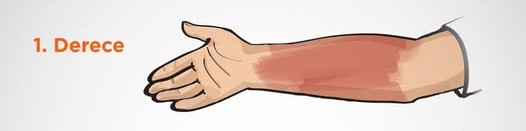
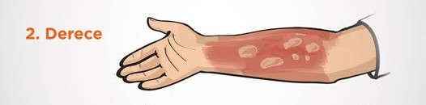
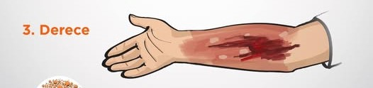

Yanık Tedavisi
Yanıklar, günlük yaşamda sıkça karşılaşılan yaralanmalardan biridir ve bazen ciddiyetini anlamak oldukça zor olabilir. Ancak, erken müdahale ve doğru tedavi yöntemleriyle, hem iyileşme süreci hızlandırılabilir hem de enfeksiyon gibi olumsuz durumların önüne geçilebilir. Yanıkların tedavisi, yanığın derecesine göre değişiklik gösterir. İlk müdahalede doğru adımlar atmak, uzun vadede daha sağlıklı bir iyileşme süreci için kritik öneme sahiptir.



Yanık Derecenizi Öğrenin
Yanık durumunuzu belirlemek için aşağıdaki soruları cevaplayın.
1. Derece Yanık
Tanım:
1. derece yanık, cilt yüzeyinde meydana gelir. Bu tür yanıklarda cilt genellikle kırmızıya döner ve hafif bir ağrı hissedilir. Yanık bölgesinde kabarcıklar oluşmaz. Genellikle birkaç saat içinde iyileşir ve kalıcı iz bırakmaz.
Nasıl Tedavi Edilir?
Aloe vera ve soğuk su ile tedavi edilebilir.
Aloe Vera
Nasıl Kullanılır?
Aloe vera jelini doğrudan yanık bölgesine uygulayın. Cildinizde rahatlama hissi oluşana kadar bekleyin. Bu, ağrıyı hafifletir ve cildin iyileşmesine yardımcı olur.
Soğuk Su
Nasıl Kullanılır?
Yanık bölgesine soğuk su uygulamak, ciltteki aşırı ısının hızla düşmesini sağlar. Soğuk su, yanık bölgesinde ağrıyı hafifletir ve iltihap oluşumunu engelleyebilir. Yanık bölgesine birkaç dakika boyunca soğuk su uygulayın.
2. Derece Yanık
Tanım:
2. derece yanık, cilt yüzeyinin altındaki daha derin katmanları etkiler. Ciltte kırmızılaşma, şişlik ve genellikle kabarcıklar oluşur. Bu tür yanıklar şiddetli ağrıya neden olabilir ve daha uzun süre iyileşebilir.
Nasıl Tedavi Edilir?
Bal, 1. derece ve küçük 2. derece yanıklarda etkili olabilir.
Bal
Nasıl Kullanılır?
Bal, antibakteriyel özelliklere sahip olup, enfeksiyon riskini azaltmaya yardımcı olabilir. Balı temiz bir parmakla yanık bölgesine ince bir tabaka halinde sürün. Bu işlemi günde birkaç kez tekrarlayın. Balın içerdiği antioksidanlar, iyileşme sürecini hızlandırarak ağrıyı hafifletebilir.
⚠️ 3. Derece Yanık
Tanım:
3. derece yanıklar, cilt ve altındaki tüm dokuları etkiler. Bu tür yanıklar çok ciddi olup, cilt tamamen yanmış ve siyahlaşmış olabilir. Sinir uçları da zarar görebileceği için ağrı hissi bazen oluşmayabilir. Derhal acil tıbbi müdahale gerektirir.
Dikkat: 3. derece yanıklar, ciddi doku tahribatına neden olur ve tedavi için profesyonel tıbbi yardım alınması gerekmektedir. Bu tür yanıklarda doğal yöntemler etkili değildir. Derhal bir sağlık kuruluşuna başvurmanız gerekmektedir.
Acilen doktora veya hastaneye gidiniz.